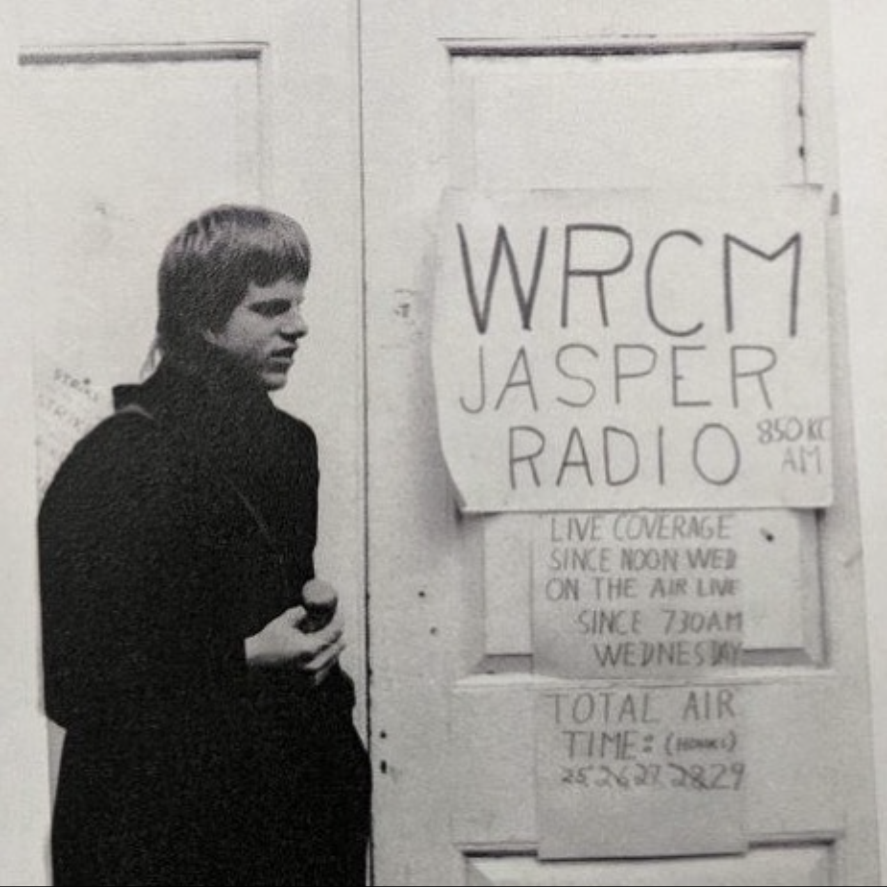
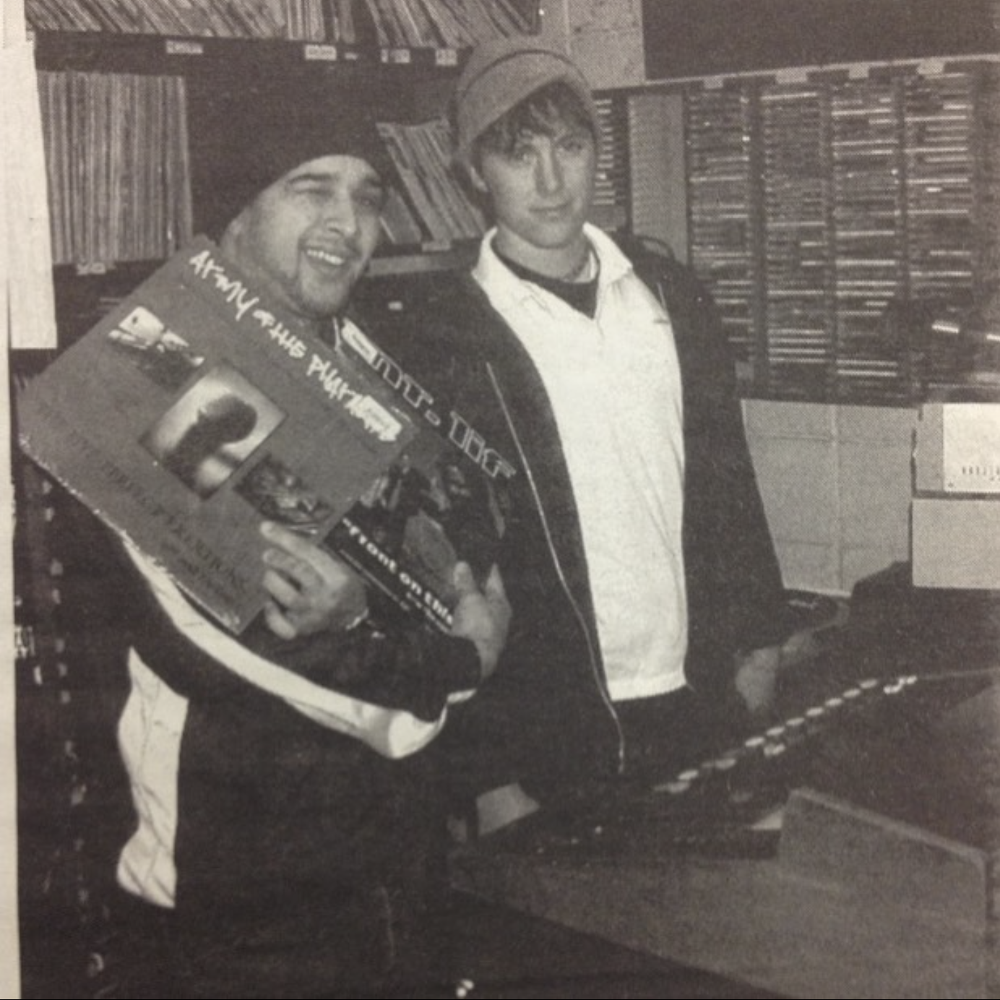
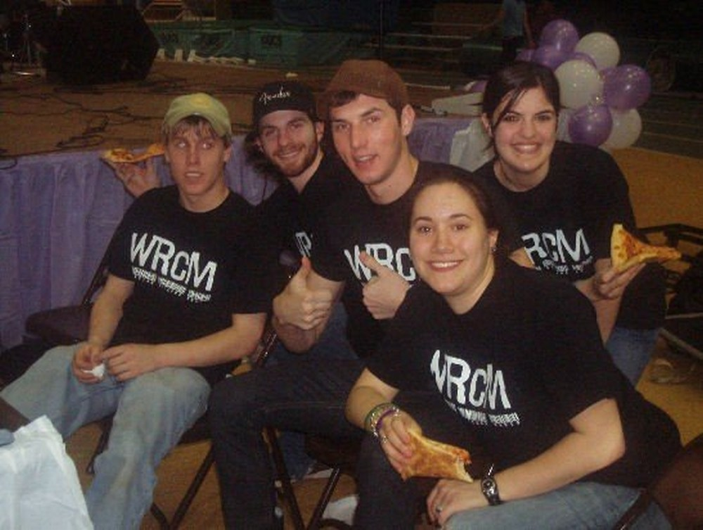
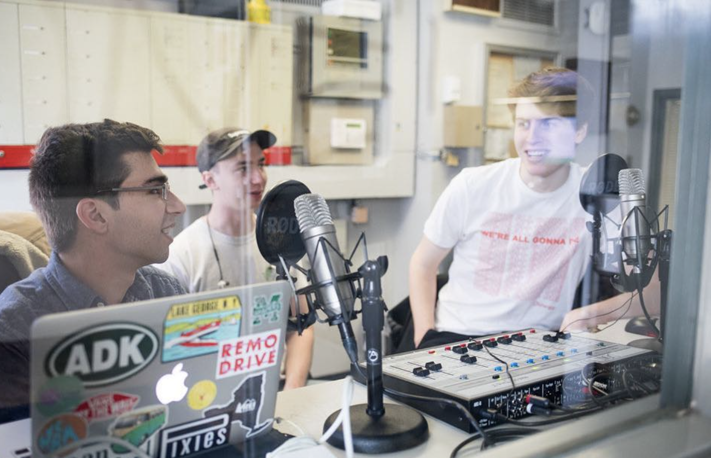
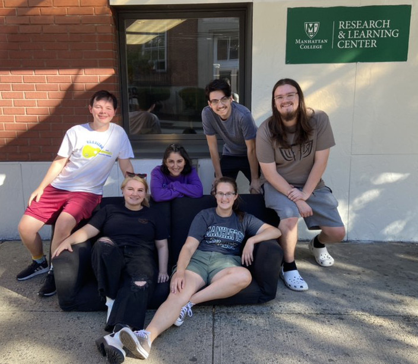

We aRe College Music
Manhattan College's One and Only Internet Radio Station

Our Mission:
WRCM is the student-run, independent radio station of Manhattan College. WRCM aims to build a community of creative, driven and passionate students that will enrich our campus by providing innovative content promoting diversity, tolerance, and freedom of expression.
Our History:

Originally founded in the mid-1970's, the station was registered with the FCC for local AM radio broadcasting. Sometime in the late 1980's, however, as legend has it some engineers took WRCM's antenna and amplified the signal, bouncing it off of the George Washington Bridge. This interfered with a major NYC radio station and the FCC revoked WRCM's broadcasting license and the station seemed to be at its end.
That was until the early 2000's, when an inventive group of students decided to resurrect the station as an internet radio station. Armed with an ethernet connection and a whole lot of CD's, the station began broadcasting once again in 2004. As the decade moved on, the station again petered out before being resurrected around 2013, and its most recent iteration being Fall 2018.


What we do Today:

WRCM is fully invested in providing a platform and community for Manhattan College students to express their creativity through live music and events as well as the continued curation of semesterly shows to be broadcast live on internet radio. The Executive board continues to seek out for opportunities for club membership to represent the club in a public way and provide entertainment for the Manhattan College Community. A collection of shirts, stickers, and other merchandise designs are sourced from the community and distributed to bring awareness to the club. The yearly zine publication is a way for students to submit creative works to be printed and distributed as an anthology of work and shared with the greater MC community.